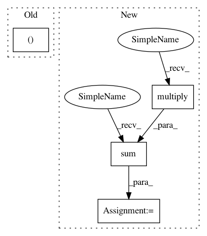

6015fd1cfb176a4f98404f3b943e88940f2de90a,autosklearn/metrics/classification_metrics.py,,acc_metric,#Any#Any#Any#,24
Before Change
label_num = solution.shape[1]
bin_predictions = binarize_predictions(prediction, task)
tn, fp, tp, fn = acc_stat(solution, bin_predictions)
// Bounding to avoid division by 0
eps = np.float(1e-15)
tp = np.sum(tp)
After Change
eps = np.float(1e-15)
tn = np.sum(np.multiply((1 - solution), (1 - bin_predictions)))
fn = np.sum(np.multiply(solution, (1 - bin_predictions)))
tp = np.sum(np.multiply(solution, bin_predictions))
fp = np.sum(np.multiply((1 - solution), bin_predictions))
tp = np.sum(tp)
In pattern: SUPERPATTERN
Frequency: 3
Non-data size: 4
Instances
Project Name: automl/auto-sklearn
Commit Name: 6015fd1cfb176a4f98404f3b943e88940f2de90a
Time: 2016-01-19
Author: feurerm@informatik.uni-freiburg.de
File Name: autosklearn/metrics/classification_metrics.py
Class Name:
Method Name: acc_metric
Project Name: automl/auto-sklearn
Commit Name: 6015fd1cfb176a4f98404f3b943e88940f2de90a
Time: 2016-01-19
Author: feurerm@informatik.uni-freiburg.de
File Name: autosklearn/metrics/classification_metrics.py
Class Name:
Method Name: acc_metric
Project Name: automl/auto-sklearn
Commit Name: 58ec59639a00d0bf885968dd885aaba610ece6d5
Time: 2016-01-22
Author: feurerm@informatik.uni-freiburg.de
File Name: autosklearn/metrics/classification_metrics.py
Class Name:
Method Name: acc_metric
Project Name: bulik/ldsc
Commit Name: edcd60f9853ba2fabdcc13164230ef8454773dd1
Time: 2014-12-08
Author: hilaryfinucane@gmail.com
File Name: ldscore/jackknife.py
Class Name: Hsq
Method Name: __init__